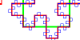
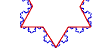
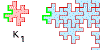

| For curves that enclose a region, the dimension can be obtained by the
comparing the perimeter of the curve and the area of the enclosed region, |
| P = k⋅Ad/2. |
| We illustrate this relation for simple Euclidean curves. |
|
|
| Next, we show why the same relation cannot hold for fractal curves. |
| If the dimension, d, of the curve satisfies d > 1, then the perimeter is infinite yet the enclosed
area is finite. |
| Consequently, P = k⋅Ad/2 cannot hold. | |
 |
| Then we reexpress the Euclidean approach to obtain a form that can
be applied to fractal curves. |
| Looking at geometrically similar shapes and measuring the area and perimeter
at the same scale, we find |
| P1/P2 = (A1/A2)d/2 |
|
 |
| Here is an example of using the relation between perimeters
and areas to calculate the dimension. |
 |